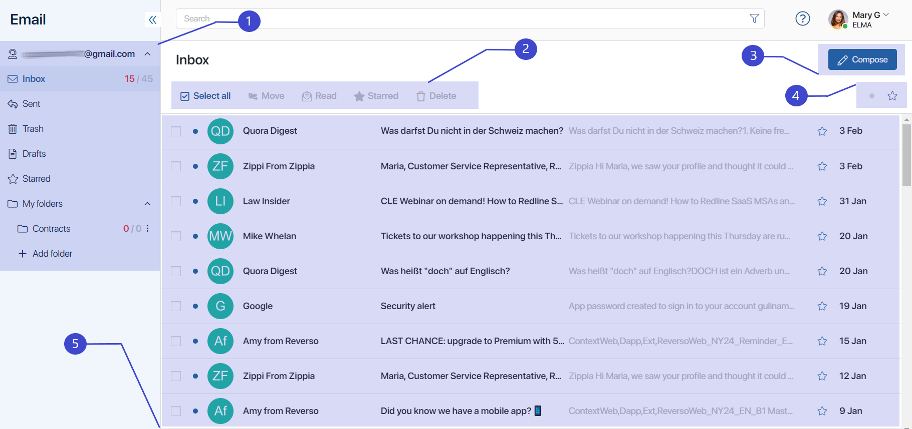
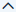
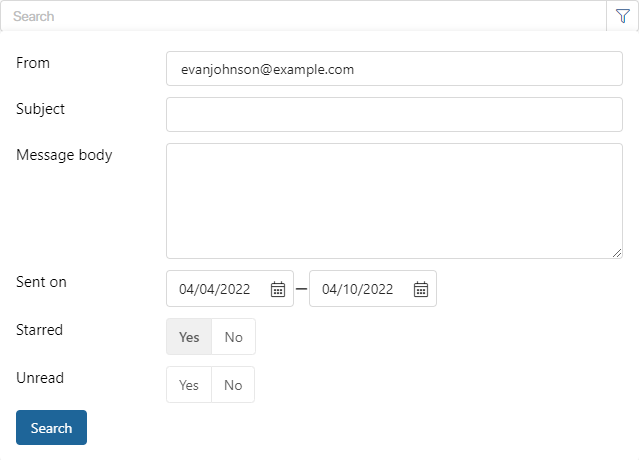

When you connect an email to an BRIX account, fifty most recent emails from your mailbox will be uploaded to the Email workspace. After that, the email address will be synchronized with the system, and all emails and attachments will be loaded in real time.
Please note, that only the last 200 emails will be stored in the Inbox, Sent, and Trash folders. When the limit is reached, the earliest emails will be deleted. However, emails starred or related to app items will remain in the system. In BRIX On-Premises this option can be disabled. To do so, please contact BRIX tech support.

- The left menu displays the name of the connected account and the folders by which emails are sorted: Inbox, Sent, Trash, Drafts, and Starred, as well as the My folders workspace, which is customizable by the user. Counters next to folder names display the number of new unread emails, as well as the total number of emails in the folder. You can collapse all folders by clicking  next to the account name, or only the customized folders by clicking the icon next to the My folders workspace.
- The top panel of the page displays buttons of available actions with emails. Select the checkbox in the email name line or select all items by pressing the Select all button. Depending on the opened folder, as well as on the current status of the email, you can select the following actions: Move, Read/Unread, Starred/Unstar, Delete/Restore, Empty Trash.
- In the upper right corner of the page, you can see the Compose button. Click this button to write and send a new email. Learn more about it in the Sending an email article.
- You can apply filters to sort all entries in folders and show only unread (
 ) or important () emails.
) or important () emails. - The list of emails is shown on the workspace page. To view all emails in a folder, click on its name in the left menu. Unread emails in the general list are marked with the icon, starred emails are marked with the icon. If an email contains attached files, the icon is displayed to the right of its name.
Click an email in the list to open its page. Here you can see the contents of the email and the attachments.You can also reply to it, forward it, delete it, link it with an app item, or see all emails on the same subject organized into a thread.
Search in the Email workspace
There is a search bar at the top of each page in the Email workspace. You can easily find an email by entering its subject or keywords in this field and pressing Enter.
Moreover, the workspace offers you advanced search. Click to set search parameters. In the window that opens, you can specify who wrote the email, its subject, its content, the exact date or a time period when it was sent. You can also specify whether the email is Starred and whether it’s Unread. After that, click Search.

You will see all emails with the parameters you specified. To reset search, click the X in the search bar.